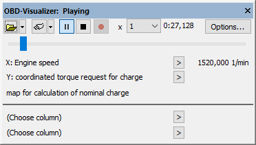
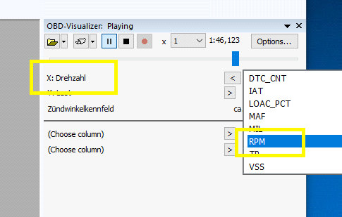

|
The dialog Visualizer (Menu Window) |

  
|
|
The dialog Visualizer (Menu Window) |
|

The Visualizer displays OBD values in WinOLS. Either live or from a recorded session. In contrast to the simulator, these are not based on memory accesses, but on real values. The values can be displayed directly here in the window as numbers or graphically in the map window (requires mapping, see below). Unlike WinUCM, WinOLS cannot read the error memory.
Quick start:
| 1. | Connect UCM100 to PC and vehicle. |
| 2. | Press the connection button (plug icon). |
| 3. | Open a map and use the upper two ">" buttons to map the correct OBD data sources to the axes. |
Open-Buttons:
With the first two buttons you can open a previously created .ObdVisualizer file. (These files can be created with WinOLS or WinUCM.) With the second button (small triangle) you can access files attached/linked in project/version. Alternatively, you can drag and drop files into this dialog.
Connection-Buttons:
With the next 2 buttons you can connect the Visualizer to UCM100 hardware. The first button does this automatically, the smaller triangle button allows you to select the protocol used.
Play-Buttons:
With the next 3 buttons you can start/pause, stop, or record the recording (only if currently a connection is active).
Time elements:
In the last block you can (for recorded sessions) select the playback speed and see the current time. Use the slider to select the current position (for recorded sessions).
Data lines:
The following 2 rows show the current values for the axes of the current map. If values are available for both axes, an estimated value (linear interpolated) is displayed for the result in the third row. Below the line any 2 other parameters can be selected. These are independent from the current map.
Mapping: ">"
The source data channels need to be mapped to the correct axes for display. Click on the ">" to select a source data channel for this axis.

Note on the data quality of the recording:
For simplicity, the recording is in table format. This is only an approximation and does not reflect the exact reality, since for performance reasons not all values can be queried constantly. Especially with slow protocols, with many values and with values that are not currently on the screen, the query is sometimes significantly delayed.
Trick:
You can resize the dialog (and e.g. reduce it to first 2 lines) and dock it below the map list.
Shortcuts
Symbol bar:
Keyboard: